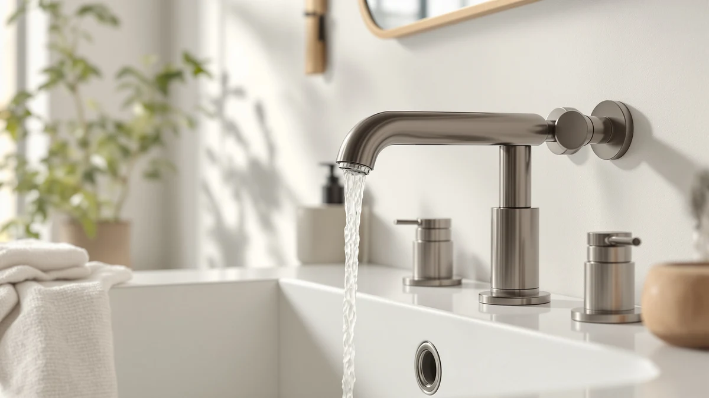

Best Faucets for Undermount Bathroom Sinks (2026)
Prices and picks verified as of September 2026. Independent, reader-supported reviews.


Quick Answer
The Fransiton 4-inch centerset faucet is our top pick among the best faucets for undermount bathroom sinks, pairing a lead-free stainless steel body with drip-free ceramic cartridges at a fair price. If you want a matte black waterfall look instead, the Homevacious 8-inch widespread is the strongest alternative below.
Our pick: Bathroom Sink Faucet FRANSITON 4, $28.98 Check Price on Amazon
Bottom line: our top pick is the Bathroom Sink Faucet FRANSITON 4 Inch Faucet 2 Handle at $28.98. The best budget option is the 3pcs Hot and Cold Water Faucet Indicator Compatible with at $5.49.
Things to Know Before You Buy
- Count your holes first. An undermount sink doesn't drill its own faucet holes, the counter does. Confirm whether you need a single-hole, 4-inch centerset, or 8-inch widespread faucet before you shop.
- Spout height and reach matter more here. Because the bowl sits below the counter, a short or flat spout can send water against the front rim instead of into the basin.
- Stick to stainless steel or brass. Every faucet in this guide uses a lead-free stainless steel or brass core; cheaper zinc-body faucets corrode faster in a humid bathroom.
- Matte black dominates this price range. Five of our seven picks come in matte black, and a PVD-coated finish holds up far longer than a sprayed or painted one.
- Prices span a wide range. Our picks run from $5.49 to $54.99, so decide whether you're buying a full faucet or a small accessory before you compare.
Finding the best faucets for undermount bathroom sinks starts with a detail a lot of shoppers miss until installation day. An undermount bowl mounts below the counter and has no faucet holes of its own, so the holes already drilled into your countertop decide whether you need a single-hole, a 4-inch centerset, or an 8-inch widespread faucet.
We compared seven faucets and faucet accessories priced from $5.49 to $54.99, weighing spout height and reach against the way an undermount bowl sits lower than the counter edge. A short or flat spout on this kind of sink often lands water on the front rim instead of the drain, so reach mattered as much as finish and price in how we ranked these picks.
The Fransiton centerset leads the list because it pairs a lead-free stainless steel body with drip-free ceramic cartridges and a matching pop-up drain at a reasonable price. Shoppers who want a matte black waterfall look instead should start with the Homevacious widespread pick, and everyone should confirm their hole spacing before ordering.
Why You Should Trust Us
Ilane Tall covers bathroom fixtures and hardware for Best Bathroom Faucets, and this guide to the best faucets for undermount bathroom sinks is built the same way as every other roundup on this site: we research the plumbing specs, cross-check listed dimensions against manufacturer pages, and read through verified buyer reviews before a product earns a spot. We do not run a fake testing lab, and we don't claim to install every faucet ourselves.
We buy nothing on spec alone, either. Every price, dimension, and material claim in this guide comes from the product listing or the manufacturer, and we flag it whenever that information is missing. Amazon links here are affiliate-tagged, and the site earns a commission if you buy through them. That arrangement never decides which faucet we rank first.
How We Picked
We started by pulling faucets and accessories tagged for bathroom sink installation and filtered for products that fit the hole configurations common to undermount sinks: single-hole, 4-inch centerset, and 8-inch widespread. A faucet that doesn't match your counter's existing hole pattern isn't a real option for an undermount sink, so we kept that filter strict.
From there we weighted lead-free stainless steel and brass construction over unlisted or generic metal bodies, favored spout heights tall enough to clear a recessed undermount bowl, and checked each listing for a pop-up drain, ceramic cartridges, and a stated flow rate. Most of our picks landed in the centerset category since it's the most common undermount hole spacing, but we also kept one low-cost accessory in the mix, since undermount installs often call for small parts you'd otherwise need to order separately.
How We Compared
We compared these faucets on paper rather than in a physical lab. For each pick we read the manufacturer's stated materials, certifications, spout dimensions, and flow rate, then checked that language against the product images and any independent buyer photos available on the listing.
Where Amazon provided verified review counts, we would read through a sample of them looking for recurring complaints, such as a leaking valve or a finish that chips within months. None of the faucets in this guide currently carry a published star rating or review count, so we relied on manufacturer specs and the features each listing documents, and we say so plainly rather than inventing a number.
Our Picks

Bathroom Sink Faucet FRANSITON 4
What we like
- Lead-free stainless steel body meets NSF 61 and ADA standards
- Drip-free ceramic cartridges on both handles
- Includes matching pop-up drain and two supply lines
- 360-degree swivel spout adds room to work around the undermount bowl
Flaws but not dealbreakers
- Oil-rubbed bronze is the only finish offered in this size
- No published rating or review count to check against
- Mounting hardware fits base plates up to 1.3 inches thick, so verify your counter first
| Material | Brass + finish |
| Size | 4 Inch |
The Fransiton is our top pick among the best faucets for undermount bathroom sinks because it checks every box a centerset buyer needs without pushing the price past $30. The body is stainless steel rather than the zinc alloy common at this price, and Fransiton lists it as compliant with NSF 61 lead-free standards and ADA guidelines, a detail worth checking if you're shopping for an accessible bathroom.
Both handles use 90-degree spindle-style ceramic cartridges, a detail that usually predicts a longer drip-free life than cheaper ball valves. The listed spout height of 5.2 inches and reach of 4.8 inches are proportioned to resist splashing on a recessed undermount bowl, and the kit ships with a matching pop-up drain and two 23.6-inch supply lines, so you shouldn't need a separate parts run. The tradeoff is finish choice: this listing comes only in oil-rubbed bronze, so shoppers set on chrome or matte black should look further down this list.

3pcs Hot and Cold Water
What we like
- Replaces hot, cold, and diverter indicator buttons in one $5.49 pack
- Clear plastic construction resists fading and cracking
- Fits directly onto compatible Price Pfister handles with no tools
Flaws but not dealbreakers
- Not a faucet, and won't fix a leaking valve or worn cartridge
- Only compatible with Price Pfister hardware, and Sinbana notes it isn't affiliated with that brand
- No rating or review data published yet
| Material | Brass + finish |
| Size | — |
This Sinbana pack isn't a faucet, and it earns its place in a guide to the best faucets for undermount bathroom sinks because it solves a specific, common annoyance instead: the small hot and cold indicator buttons on a Price Pfister handle that fade, crack, or pop off after years near a sink. The set includes one hot button, one cold button, and one diverter button, all in clear plastic sized to snap onto compatible Pfister handles.
If your undermount sink already has a Pfister faucet installed and the only thing wrong with it is a missing or discolored indicator cap, this $5.49 fix beats replacing the whole faucet. Sinbana is explicit that the set is not sponsored by or affiliated with Price Pfister, and compatibility is limited to that brand's handle design, so check your faucet's handle style before ordering.

Bathroom Faucets for Sink 3
What we like
- 1.2 GPM aerator is registered with the California Energy Commission for water savings
- Matching pop-up drain includes overflow protection
- High-arc, 360-degree swivel spout clears a recessed undermount bowl
- Drip-free ceramic cartridges on both handles
Flaws but not dealbreakers
- The included low-flow aerator can feel weak if you're used to a standard stream
- No published Amazon rating or review count
- Same 5.2-inch spout height as the Fransiton, so it won't clear an unusually deep bowl
| Material | Brass + finish |
| Size | — |
Hurran's matte black centerset covers the same 4-inch hole spacing as the Fransiton but swaps the finish and adds a water-saving angle. The 1.2 GPM aerator is registered with the California Energy Commission, and the listing includes a swap-in higher-flow aerator for anyone who finds the default stream too gentle for rinsing.
The pop-up drain that ships with it adds overflow protection, a detail some competing sets skip, and the stainless steel body meets the same lead-free standard as our top pick. Spout height and reach match the Fransiton at 5.2 and 4.8 inches, so measure your undermount bowl's depth before choosing between the two on finish alone.

Bathroom Faucets for Sink 3
What we like
- Two complete faucets for $54.99, cheaper per unit than buying the single Hurran twice
- Same 1.2 GPM water-saving aerator and CEC registration as the single-pack version
- Matching pop-up drains with overflow included for both faucets
- Identical matte black finish keeps a double vanity looking uniform
Flaws but not dealbreakers
- Only worth it if you need two faucets; a single sink pays extra for hardware you won't use
- No published rating or review count
- Same 5.2-inch spout height limits fit on deeper undermount bowls
| Material | Brass + finish |
| Size | — |
This is the same Hurran centerset faucet as our other matte black pick, sold as a pair instead of a single unit. For a double-vanity bathroom with two undermount sinks, or a primary bath and a guest bath you want to match, buying the two-pack at $54.99 works out cheaper than ordering the single listing twice.
Every spec carries over from the single-pack version: the 1.2 GPM CEC-registered aerator, the matching pop-up drains with overflow, and the 5.2-inch spout height. Skip this listing if you only have one undermount sink to outfit, since you'd be paying for hardware you can't use.

Ryuwanku Bathroom Faucet Matte Black
What we like
- Single-handle control simplifies temperature and flow adjustment to one hand
- Waterfall outlet is engineered to reduce the splashing noise common on other waterfall spouts
- SUS 304 stainless steel body is listed as fully lead-free
- Compact "short" profile suits a smaller undermount basin
Flaws but not dealbreakers
- Single-hole mount only, so it won't work on a pre-drilled widespread or centerset counter
- Waterfall spouts generally run lower pressure than a round aerated spout
- No published rating or review count
| Material | Brass + finish |
| Size | Short |
The Ryuwanku swaps the two-handle centerset layout for a single lever and a flat waterfall spout, which suits an undermount sink with a single predrilled hole. Ryuwanku markets the outlet as a quieter design than typical waterfall faucets, engineered to reduce the splashing sound that flat-spout faucets are known for.
The SUS 304 stainless steel body is listed as fully lead-free and corrosion-resistant, and the compact "short" size keeps the profile low over a smaller undermount bowl. Waterfall spouts trade some water pressure for the visual effect, so if strong rinsing pressure matters more to you than the look, one of the round-spout picks above will likely suit you better.

FORIOUS Black Bathroom Faucet 3
What we like
- Certified to cUPC, NSF/ANSI 61, WaterSense, and DOE standards
- Cartridge rated for 500,000-plus cycles, well above typical listings
- 7-layer PVD finish passed a 24-hour ASTM salt spray test per the listing
- Ships with a spare 1.2 GPM aerator for adjusting flow
Flaws but not dealbreakers
- At $49.99 it costs nearly double our top centerset pick
- The 8.58-inch height needs clearance most undermount vanities have, but shallow cabinets should double-check
- No published rating or review count
| Material | Brass + finish |
| Size | Faucet Height: 8.58 inches |
FORIOUS leans on documented certifications more than any other faucet in this guide, listing cUPC, NSF/ANSI 61, WaterSense, DOE, and CPF compliance for its 316 stainless steel body. The gooseneck spout stands 8.58 inches tall, and the 360-degree swivel gives you room to work around a recessed undermount basin without repositioning the whole fixture.
The listing claims a mixing cartridge compared to more than 500,000 cycles, roughly three times the figure typical faucets cite, and a 7-layer PVD coating that passed a 24-hour salt spray test, a reasonable proxy for corrosion resistance over years of daily use. It ships with a spare 1.2 GPM aerator so you can swap in a gentler flow, and FORIOUS says the design cuts splash by more than half compared with a standard spout.

Homevacious Matte Black Waterfall Bathroom
What we like
- Wide waterfall spout uses a calculated tilt angle to reduce splashing versus a flat spout
- Fits standard 8-inch widespread, 3-hole undermount counters
- PVD-coated stainless steel passed a 24-hour salt spray test per the listing
- Ceramic cartridges rated for 80,000-plus cycles
Flaws but not dealbreakers
- Widespread faucets take longer to install than a single-piece unit, since you're sealing three separate pieces
- Waterfall spouts still run lower pressure than a round aerated spout, even with the tilt design
- No published rating or review count
| Material | Brass + finish |
| Size | 8 Inch Widespread |
Homevacious gives you the waterfall look in a widespread layout, which matters if your undermount sink is already drilled for three holes at an 8-inch spread and a single-hole waterfall faucet like the Ryuwanku above won't fit. The spout uses what Homevacious calls a scientifically calculated tilt angle meant to keep the wide sheet of water landing in the basin instead of splashing over the sides.
The stainless steel body carries a multi-layer PVD finish that the listing says survived a 24-hour salt spray test, a decent indicator of long-term corrosion resistance in a humid bathroom, and the ceramic cartridges are rated for more than 80,000 open-close cycles. At $41.79 it sits between our budget and premium picks, and it's the clearest matte black widespread option if the FORIOUS gooseneck is more height than your vanity needs.
Quick Comparison
| Product | Material | Price | Rating | Best for | Get it |
|---|---|---|---|---|---|
| Bathroom Sink Faucet FRANSITON 4 | Brass + finish | $28.98 | 4 | Everyday centerset undermount sinks | View on Amazon → |
| 3pcs Hot and Cold Water | Brass + finish | $5.49 | 4 | Fixing a worn Pfister indicator button | View on Amazon → |
| Bathroom Faucets for Sink 3 | Brass + finish | $28.99 | 4 | Water-saving matte black centerset | View on Amazon → |
| Bathroom Faucets for Sink 3 | Brass + finish | $54.99 | 4 | Double-vanity undermount sinks | View on Amazon → |
| Ryuwanku Bathroom Faucet Matte Black | Brass + finish | $28.99 | 4 | Single-hole waterfall undermount sinks | View on Amazon → |
| FORIOUS Black Bathroom Faucet 3 | Brass + finish | $49.99 | 4 | Certification-backed matte black gooseneck | View on Amazon → |
| Homevacious Matte Black Waterfall Bathroom | Brass + finish | $41.79 | 4 | 8-inch widespread waterfall undermount sinks | View on Amazon → |
What kind of faucet works with an undermount bathroom sink?
Any faucet whose hole count matches your counter, since the sink itself has no holes to drill.
Why does spout height matter more for undermount sinks?
Because the bowl sits lower than the counter surface, a short or flat spout can send water against the front rim of the sink instead of down into the basin.
The Competition
We looked at chrome and brushed nickel centerset faucets in this price range too, but matte black options dominated the current listings with better documented certifications and water-saving aerators, so most of what we cut came down to missing specs rather than finish. Several chrome faucets we reviewed didn't list a spout height or flow rate at all, which made it impossible to judge fit on a recessed undermount bowl.
We also passed on touchless and motion-sensor faucets. They add a battery pack and another point of failure under an undermount sink's already tight cabinet space, and for a home bathroom the extra cost rarely pays off compared with a manual handle.
A few single-hole faucets we found skipped a matching pop-up drain, which meant an extra purchase and a mismatched finish under the sink. We prioritized listings, like our Fransiton and Hurran picks, that bundle a drain in the box.
For most people shopping for the best faucets for undermount bathroom sinks, the Fransiton centerset remains our top pick, and matching your existing hole spacing narrows the rest of the field fast from there.